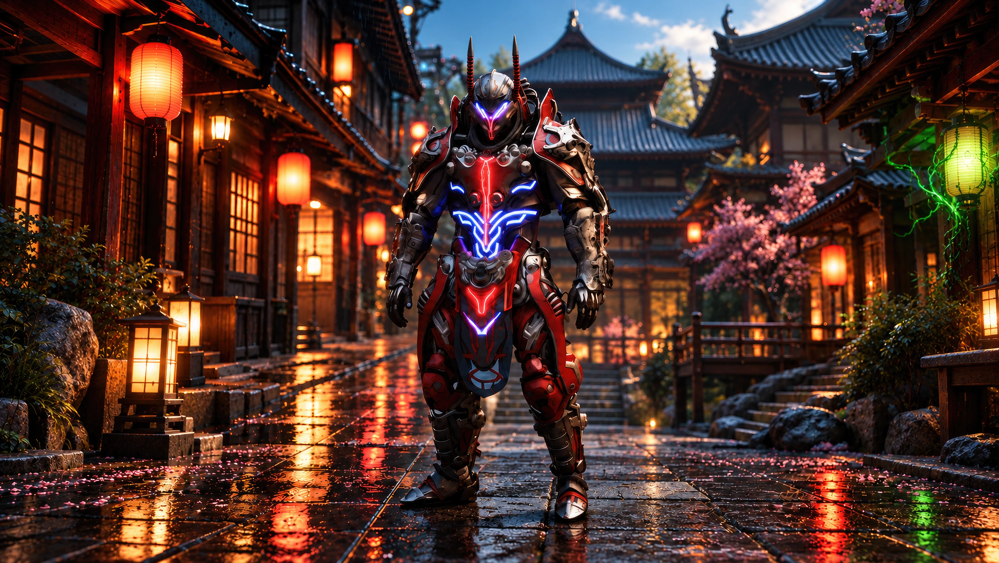
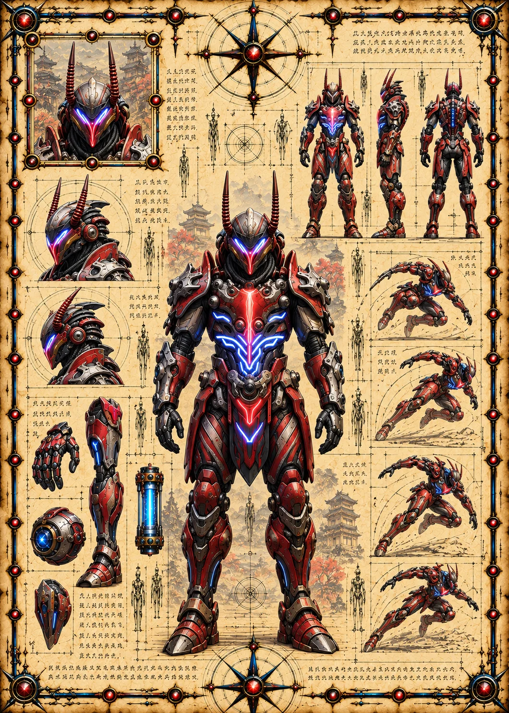

Field Observation
Arelian investigates a green alien lantern fixed beside the street's upper-right edge. The lantern may be an alien signal concealed within Earth 1 street lighting.
 ©
©
GENEZYS ARCHIVE · EARTH 1 · Legionnaire
Tone Tuner
Identity & combat record
Archive node 01 / 05
Archive record
Arelian listens to crystal the way musicians listen to strings. The Resonant Pop shatters an enemy's balance with one sonic burst and leaves an echo that keeps hurting. Every Warden's bond-stone hums at its own pitch, and Arelian can tell them all apart.
Combat signature
Shatters equilibrium with sonic burst: Deals 40 pierce damage and another 50 damage for next 2 rounds.
Genezys 05:03 ™&©2026LEGIONS
Recovered visual record
Archive node 02 / 05

Full frame available // rotate device to landscape
Technical archive
Archive node 03 / 05

Classified field intelligence
Archive node 04 / 05
FIELD REPORT // SIGNAL INVESTIGATION
Field Observation
Arelian investigates a green alien lantern fixed beside the street's upper-right edge. The lantern may be an alien signal concealed within Earth 1 street lighting.
Environment
Object Analysis
Key Findings
Motion archive
Archive node 05 / 05
Motion record not yet recovered